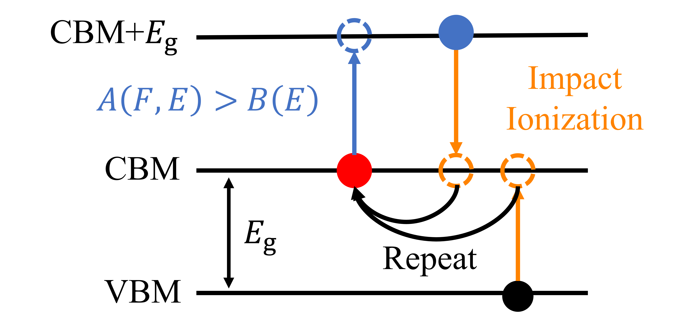

Intrinsic Dielectric Breakdown


QTrans estimates the intrinsic dielectric breakdown field by comparing field-induced electron heating with energy transfer to phonons [6, 7]. This energy-balance model describes dilute conduction electrons interacting with an equilibrium phonon bath. It uses a scalar effective mass and an energy-averaged scattering time; it does not include defect-assisted or thermal breakdown mechanisms.
Energy Gain from the Electric Field
For an electron with energy \(E\) in an electric field of magnitude \(F\), the model uses the energy gain rate
where \(e>0\) is the elementary charge and \(m^*>0\) is the effective electron mass. The factor of \(1/3\) belongs to the three-dimensional isotropic heating model used here. Both \(A(E,F)\) and the energy loss rate defined below have units of energy per unit time.
The energy-dependent relaxation time is defined as the reciprocal of the average scattering rate on a constant-energy surface:
with the density of states
Here, \(\nu\) labels a conduction band, \(\mathbf{k}\) is an electron wave vector, and \(\Omega_{\mathrm{BZ}}\) is the Brillouin-zone volume. The same band selection, integration weights, and spin-counting convention must be used in the numerator and \(D(E)\). This definition averages \(\tau_{\nu\mathbf{k}}^{-1}\) before taking its reciprocal; it is not an arithmetic average of the state-resolved relaxation times in present version.
Electron-Phonon Scattering Rate
In the dilute-carrier limit, Pauli blocking of the final conduction states is neglected. Fermi’s golden rule then gives
The matrix element \(g_{\mu\nu b}(\mathbf{k},\mathbf{q})\) couples the initial electron state \(|\nu\mathbf{k}\rangle\) to the final state \(|\mu\mathbf{k+q}\rangle\) through phonon mode \((\mathbf{q},b)\). The phonon has angular frequency \(\omega_{\mathbf{q}b}\) and equilibrium Bose–Einstein occupation \(n^0_{\mathbf{q}b}\). The terms proportional to \(n^0_{\mathbf{q}b}\) and \(n^0_{\mathbf{q}b}+1\) describe phonon absorption and emission, respectively.
Net Energy Loss to Phonons
The net energy loss rate is obtained by weighting each emission or absorption process by the energy transferred to the phonon bath and averaging over initial electron states at energy \(E\):
Emission contributes positively to \(B(E)\), whereas absorption contributes negatively. Thus \(B(E)\) is a net loss rate and can be negative where phonon absorption dominates. In contrast, both processes contribute positively to the total scattering rate \(\tau(E)^{-1}\).
Breakdown Criterion
The von Hippel criterion [8] requires field-induced heating to exceed the net phonon energy loss throughout the energy interval needed for impact ionization:
where \(E_{\mathrm{CBM}}\) is the conduction-band minimum and \(E_{\mathrm{g}}\) is the band gap. The upper endpoint is an approximate impact-ionization threshold in this model; actual thresholds can depend on the band structure and momentum conservation.
For \(B(E)\geq0\), balancing gain and loss gives the local threshold
The breakdown field is the largest local threshold in the interval:
Energies with \(B(E)<0\) impose no positive heating threshold. The maximum marks the onset of the criterion; a field strictly above it satisfies the strict inequality wherever the model rates are finite and \(0<\tau(E)<\infty\).
Note
Constant-energy averages are defined only where \(D(E)>0\). In practice, QTrans evaluates them on a broadened energy grid and excludes nonfinite field estimates and negative scattering-rate–energy-loss-rate products from the maximum. If no valid points remain, the code reports zero; this fallback does not establish a physical zero breakdown field. The result should be checked for convergence with respect to the electronic and phonon meshes, broadening, and energy-grid spacing.
Note
The code measures electron energies relative to the conduction-band
minimum and restricts the final maximum using fbd_exp_bandgap. The
sampled fbd_erange should cover the interval from zero to that gap.
The input fbd_effective_mass is the effective mass in units of the
free-electron mass, and the reported breakdown field is in MV/m.